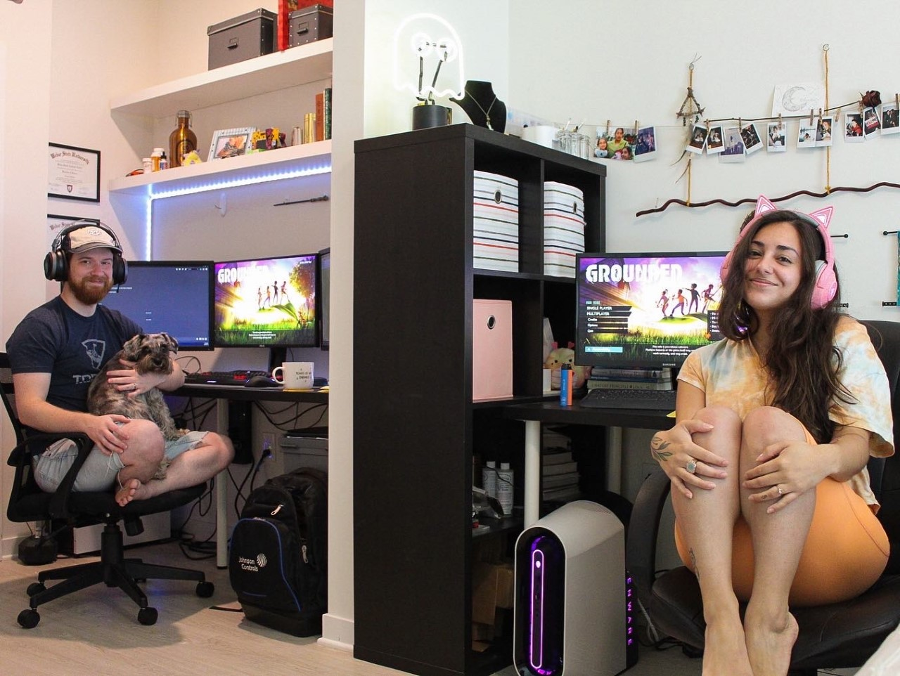
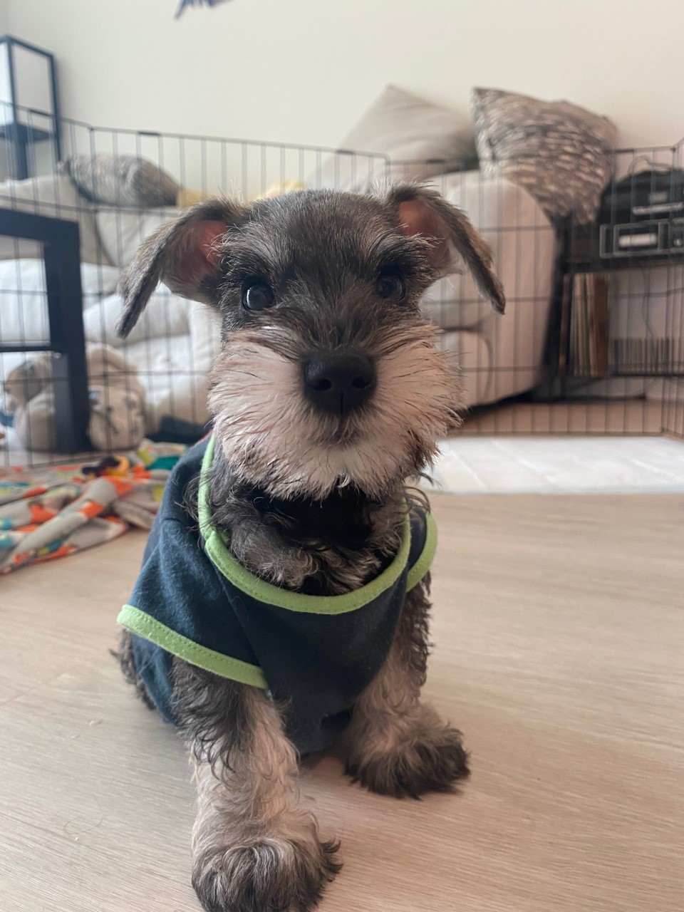

Hello There, Stranger.
What better way to summarize who I am, than to share an array of my photos found on my Tumblr!?
With the help of my husband (I shouted "say when" from across our desks,) I selected 10 random photos from my Tumblr profile to add to my first ever website! How exciting! While I do have an eye for some sort of aesthetic (I was going to say cheerful but the first image would imply otherwise,)
there is more to me than the visuals. However, I think these 10 photos do say a bit about who I am. I love donuts, cute animations, the mountains and grade A butts, amongst other things. I really should have included an image of a dancer because most of my life involved dancing. It was the love of
my life for a very long time. After I graduated college, I got sucked into the waves of "adult" stuff and I haven't stepped in a dance studio since. It has been over 3 years now which is mind-blowing to me. I still dance on my own from time to time, but these days I mostly make jewelry. You can view
my jewelry webpage using the link in the toolbar. No, I did not make that website from scratch, but it's never too late to make a new one. When I'm not making things, I'm playing PC games with my boo thang, hanging out with our two mini schnauzers, or attending a fitness class.
 
My Whereabouts
I can't stay in one place for long.
I spent a large chunk of my years in a mountain town called Woodland Park, Colorado. When I think of "home," I
think of "mountains." I graduated from MSU Denver with a dance degree and a biology degree. Before Colorado, I spent a couple of years in a sketchy town in New Mexico, and before that I lived the first 6 years of my life in Rhode Island. I am currently a resident
of St. Petersburg, Florida. The climate here is not my cup of tea, but I have still enjoyed my time here.
My husband and I moved here because he got a promotion that required a relocation. My husband is Canadian, and needless to say, he hates the weather here. Luckily for both of us, we are moving to New Mexico in 3 weeks. It's a long story that I won't bore you with.
All I'll say is we are both excited to experience living a *very* rural lifestyle.
Roadmap of my squiggly career path.
I like dipping my feet in just long enough to make the fish think I belong there.
I was never one of those kids that had a response for "what do you want to be when you grow up?." I still don't have a confident answer, but I at least feel like I'm on the right path. Once I graduated college, I stopped studying mosquitoes and I somehow found myself teaching
5th graders. I never imagined I'd teach, but it was overall a wholesome experience. I ended up becoming the office manager of the STEM academy I was teaching at, and I realized administrative work is just not of any importance to me. I considered revisiting biology, but the thought of
adding to my already terrifying debt, well, scared me away. I did some research and decided I wanted to see what electrical work was all about. I joined the IBEW and began working with all the tools. I was pleasently surprised with how much a enjoyed being an electrical apprentice. It was
so much fun using all the different tools and I had such an amazing group of guys teaching me the ins and outs. Not shortly after, I met the actual love of my life (not dance, an actual being.) We are truly soulmates and knew it from the first formal and awkward handshake. My husband's name is Brian
by the way. Brian had to make a decision on whether or not he was accepting a job in Florida. It would be crazy for him to turn down such an awesome oppurtunity for someone he just met, right? So he did what any sane person would have done, and asked me to go with him. Oh yeah! He took it a step
further and put a ring on it. What a life. Brian loves computers. I've been around computers all my life because, well, I was born in 1997, but also because my father is a computer scientist. He is actually a doctor of computer science and is the first ever civllian research scientist at the Air Force
Academy in Colorado Springs. He researches machine learning and artificial intelligence. Wild guy. I can't seem to escape these computer guys who want to teach me computer stuff. So here I am- taking a huge (but actually not too huge because I am 4 foot 11 inches) leap into the world of cooding!
The problem solving bit of it all is what excites me the most. What I've seen and worked with so far, I am truly enjoying. Coding Temple is the perfect option for someone moving to the middle-of-nowhere and is a homebody, problem-solving, tumblr-generation type of gal.